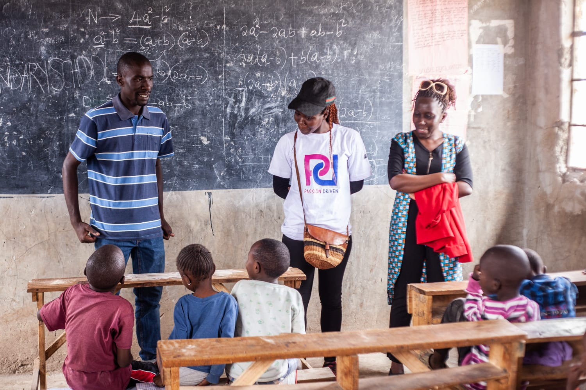

Giving back to the society
Our aim is to have champions and leaders whom can share and guide others.
Our Group
Passion Driven is a registered self-help group in Kibera constituency Nairobi Kenya. The group was started by our founder who had just an idea of visiting one children home in Kibera FOLKS he communicated to few friends in which he got support donations, clothes, sanitary towels and soaps with this it formed a team.
The program of the day was to cook play games with the kids and make sure they have fun, after the event every person who came had enjoyed themselves to the brim, the team which was present for the first day was around 15 people after this the members chose the leaders and decided that it should be done more and more from there the leadership team planned events after one month there is an event. The group has seen growth in numbers of people who came to the event and also the impact which the team created as they visited these homes.
To remove boredom also the team suggested that we should not visit just one home in Kibera but also different homes in Nairobi of which all of the members agreed out of 17 sub counties in Nairobi the team has managed to visit more than 11 in Nairobi and in some places the tam has visited twice.

Our Services
Our aim is to have champions and leaders
whom can share and guide others.
Let's Connect
Please contact us and we will get back to you.